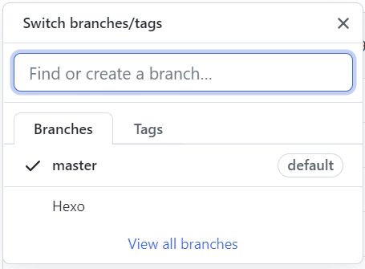
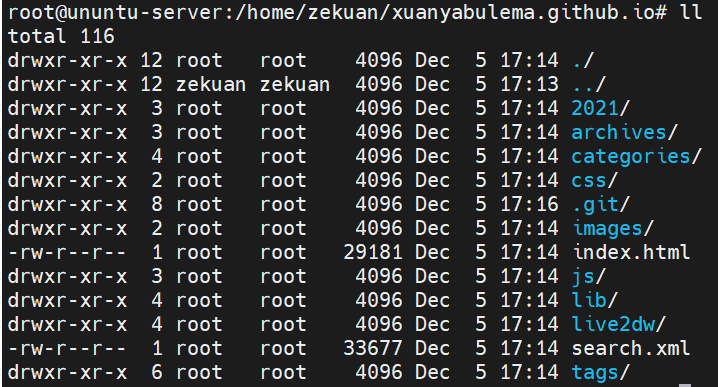

Hexo 多端同步|迁移
新建GitHub分支以保存Hexo源文件

将本地Hexo目录与GitHub的Hexo分支关联上
2022-10-17更新
建议新建一个私有仓库保存，防止token等泄露
先将Hexo分支文件clone到本地：
#git clone -b 分支名 仓库链接
git clone -b Hexo git@github.com:xuanyabulema/xuanyabulema.github.io.git进入拷贝到本地的文件：
cd xuanyabulema.github.io/用ll查看文件

删除.git/以外的所有文件
shopt -s extglob #（打开extglob模式）
rm -fr !(.git/)
# 如果是多个要排除的，可以这样：
# rm -rf !(file1|file2) 将变化同步到GitHub
git add -A
git commit -m "Hexo源文件同步"
git push origin 将.git/移到你的本地Hexo源文件夹blog根目录下
mv xuanyabulema.github.io/.git/ blog/.git/将目录下 themes 文件夹下每个主题文件夹里面的 .git .gitignore 删掉。
rm -rf .git/
rm -rf .gitignore将变化同步到GitHub
git add -A
git commit -m "Hexo源文件同步"
git push origin 新环境配置与同步
Ubuntu下配置
生成ssh key
sudo ssh-keygen -t rsa -C "XXXX@email.com"以我的为例
sudo ssh-keygen -t rsa -C "xuanyabulema@qq.com"cat /root/.ssh/id_rsa.pub然后将cat获取到的结果存至GitHub
验证是否连接成功
ssh -T git@github.comWindows下配置git
ssh-keygen -t rsa -C "xuanyabulema@qq.com" 将Github上的Hexo源Blog文件同步到本地./blog目录下
git clone -b Hexo git@github.com:xuanyabulema/xuanyabulema.github.io.git ./blog后来改为了一个单独的私有仓库，使用如下命令
git clone git@github.com:xuanyabulema/Hexo.git ./blog变更后同步到Github
git add -A && git commit -m "Hexo源文件同步" && git push origin 其他端变更后同步到本地
git pull安装Hexo环境
安装Nodejs
# Using Ubuntu
curl -fsSL https://deb.nodesource.com/setup_lts.x | sudo -E bash -
sudo apt-get install -y nodejs安装Hexo
sudo npm install -g hexo-cli 安装nmp依赖
cd blog
npm install